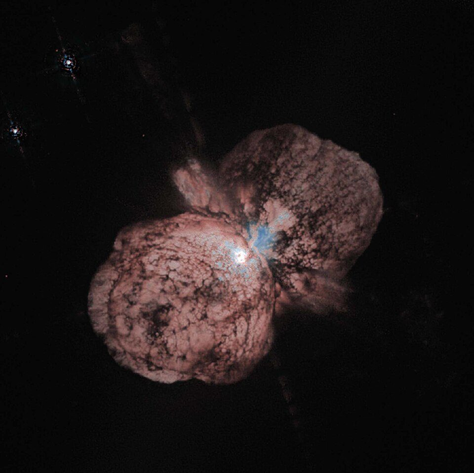
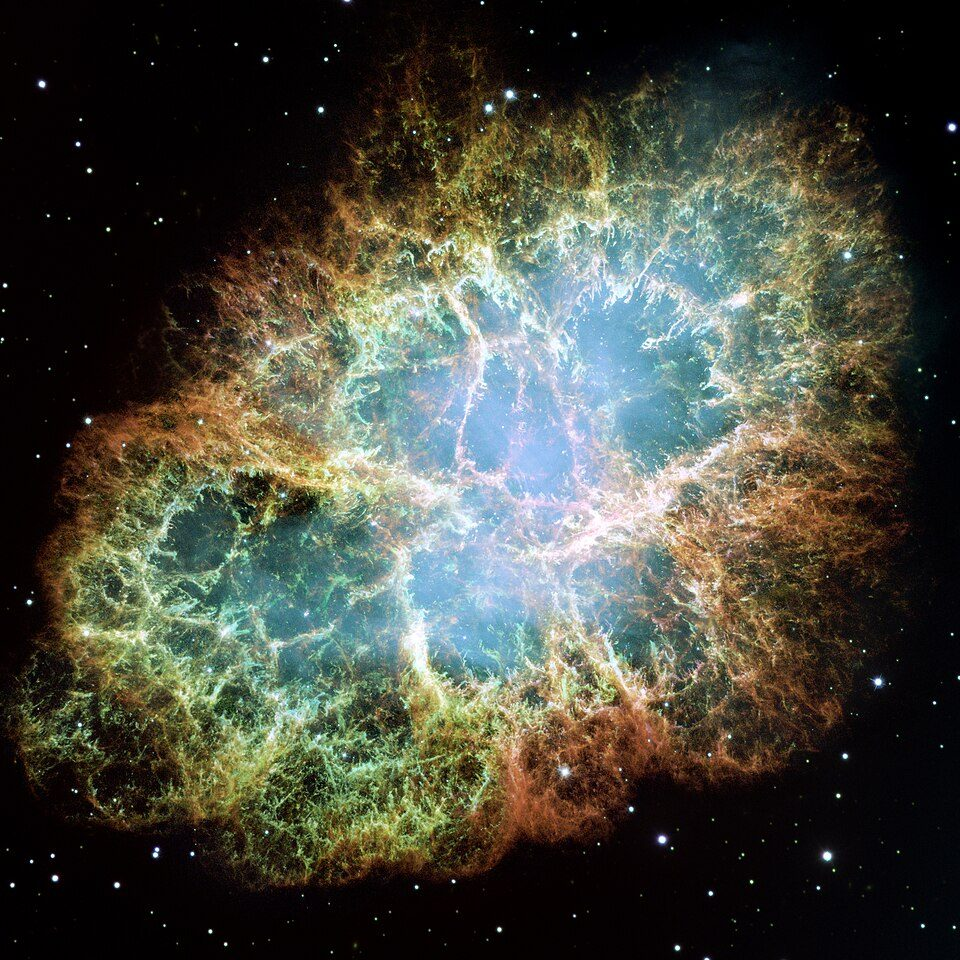

Nebulae
Clouds of gas and dust where stars are born and where their remains end up: the most beautiful landscapes in the sky.


The word nebula comes from Latin and means "cloud". Before large telescopes, any fuzzy patch in the sky was called that, including galaxies. Today the term is reserved for clouds of gas and dust in interstellar space, which are both cradles and graves of stars.
Types of nebulae
- Emission nebulae: the gas glows with its own light, mostly red, because young, hot stars inside excite it with ultraviolet radiation. Orion is the most famous example.
- Reflection nebulae: dust reflects the light of nearby stars and looks bluish, like the sky. The Pleiades are wrapped in one.
- Dark nebulae: clouds so dense that they block the light from behind, like the famous Horsehead.
- Planetary nebulae: the layers shed by a Sun-like star at the end of its life. They have nothing to do with planets: the name comes from the fact that, in small telescopes, they looked like planetary discs.
- Supernova remnants: the clouds left by the explosion of a giant star, like the Crab Nebula.
The Orion Nebula
At 1,350 light years, it is the closest large star-forming region to Earth. It can be seen with the naked eye as a small smudge in Orion's "sword", below the three belt stars. Inside it, the Hubble telescope has found hundreds of newborn stars and protoplanetary discs, solar systems in the making.
The Pillars of Creation
In 1995 Hubble photographed columns of gas and dust several light years tall in the Eagle Nebula. The image became one of the most famous in the history of science. Stars are forming inside them. In 2022 the James Webb telescope photographed them again in infrared, seeing through the dust.


The Crab Nebula
On 4 July 1054, Chinese astronomers recorded a "guest star" so bright it was visible in daylight for 23 days. It was a supernova. Today, in that spot in the sky, lies the Crab Nebula, a cloud of debris expanding at 1,500 km/s, with a pulsar at its centre spinning 30 times a second.


Charles Messier and his list
In the 18th century the Frenchman Charles Messier was hunting comets and kept running into smudges that did not move. To avoid confusion he made a list of 110 "annoying" objects. Today the Messier catalogue is amateurs' favourite list: M1 is the Crab, M42 is Orion and M31 is the Andromeda galaxy.
Videos to understand it better
- Nebulae: Crash Course Astronomy #36CrashCourse · 1.2M views
- Why Stars Need Nebulas | How the Universe WorksScience Channel · 327K views
Videos are from YouTube and belong to their creators. They only load when you click them. See all videos →